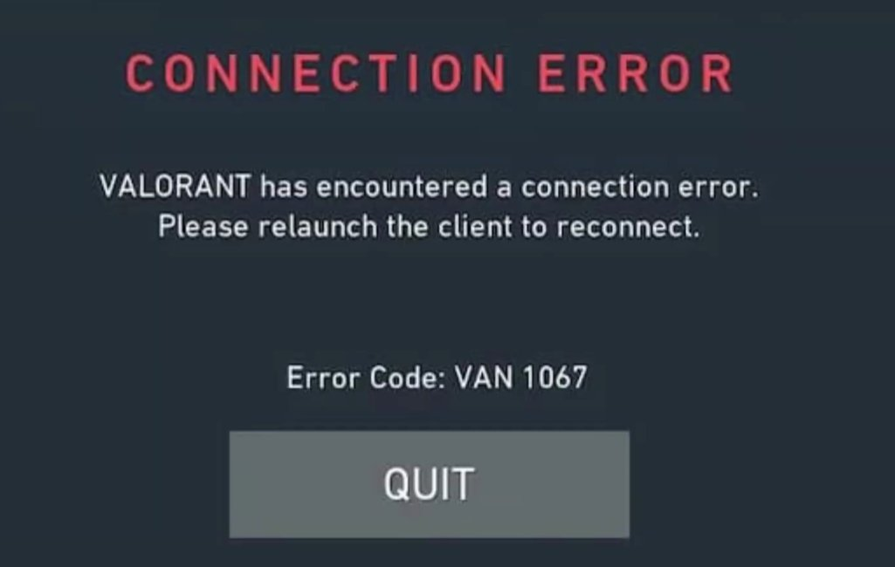
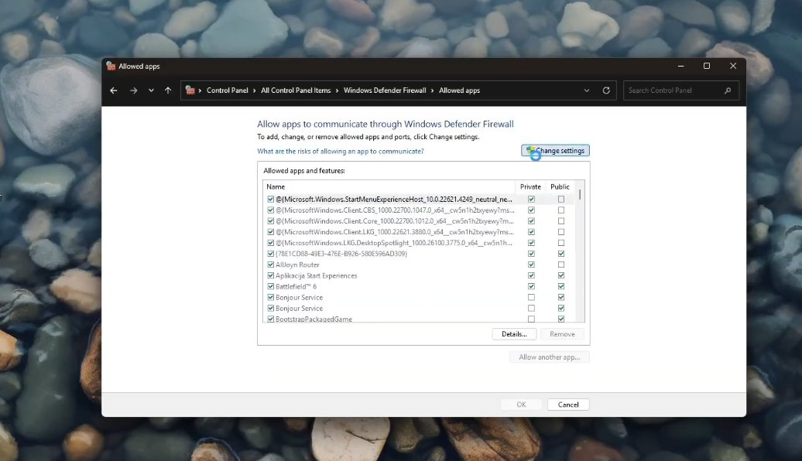
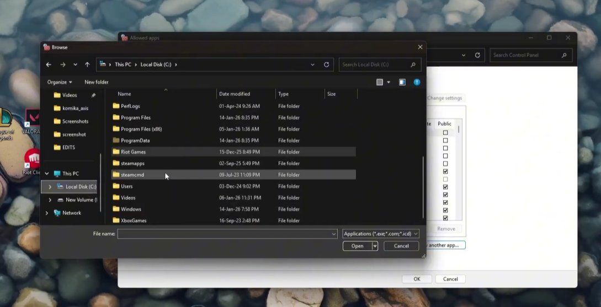
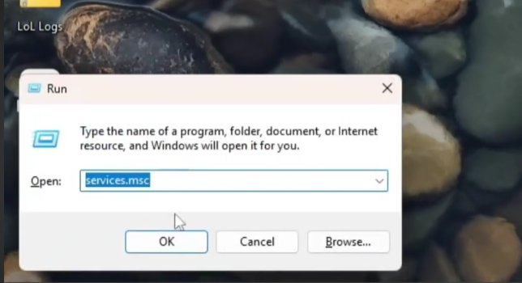

Valorant VAN 1067: What Happened and How to Clear It
My cousin upgraded his PC to Windows 11 last year — fresh install, everything working fine — fired up Valorant the next evening and got hit with VAN 1067. Game wouldn't launch. Just a grey screen, the error, and a link to a support page that told him his system didn't meet requirements he'd never heard of before. He plays ranked. He was not calm about this.
We fixed it in about 40 minutes, mostly because we had to figure out where exactly in his BIOS these settings were hiding. His motherboard manufacturer had labelled everything slightly differently from what every guide online was describing. So this guide assumes you're in a similar situation — you understand roughly what needs to happen but the exact steps in your BIOS look nothing like the screenshots you've been following.

What VAN 1067 Actually Is
Valorant runs on Riot's Vanguard anti-cheat system, and Vanguard has required TPM 2.0 and Secure Boot to be enabled since mid-2022 — the same requirements Microsoft introduced for Windows 11 itself. The logic is that these two features make it significantly harder for cheat software to tamper with the system at a low level before the OS even loads.
VAN 1067 specifically means Vanguard detected that one or both of these features are either disabled or not available on your system. It won't let the game run until both are active.
The three situations that produce this error are:
- TPM 2.0 is disabled in BIOS. The chip is present — most motherboards made after 2017 have it — but it's been switched off in firmware, either because it was off by default or because someone turned it off during a Windows 10 installation to avoid compatibility issues.
- Secure Boot is disabled in BIOS. Very commonly disabled because people turn it off when dual-booting Linux, installing unsigned drivers, or doing a clean Windows install from certain USB tools that require legacy boot mode. It stays off after Windows is installed and you forget about it.
- Your motherboard genuinely doesn't have TPM 2.0. Older boards, some budget boards, and certain OEM machines don't have it. If this is you, the options are limited — covered at the end of this guide.
Before Going Into BIOS — Check What You're Working With
Two quick checks before you touch anything in BIOS:
Open the Start menu, search for "tpm.msc" and press Enter. The TPM Management window opens. If it shows "The TPM is ready for use" with a specification version of 2.0 — your TPM is present and enabled. If it says "Compatible TPM cannot be found" — it's either disabled in BIOS or genuinely absent.
Then check your boot mode: open Start, search for "System Information", open it, and look for BIOS Mode in the right panel. If it says UEFI — good, Secure Boot can be enabled safely. If it says Legacy — enabling Secure Boot may stop Windows from booting and you'll need to convert your disk first.
Screenshot or photograph both of these before going into your BIOS. Useful reference.
Getting Into Your BIOS
Restart your PC. The moment the screen goes black and before Windows starts loading, repeatedly press the BIOS key for your motherboard. The common ones:
- ASUS: Delete or F2
- MSI: Delete
- Gigabyte: Delete or F12
- ASRock: F2 or Delete
- HP prebuilts: F10 or Esc
- Dell prebuilts: F2 or F12
- Lenovo prebuilts: F1, F2, or the tiny Novo button near the power port
If you miss the window and Windows starts loading, just restart and try again. You usually have about 2–3 seconds. On fast SSDs the window is short — press the key repeatedly from the moment you hit restart, don't wait to see the logo.
Once you're in, the BIOS will look different depending on your motherboard manufacturer. Some have a slick graphical interface, some look like they're from 2003. The settings you need exist in all of them — they're just named and located differently.
Enabling TPM 2.0
TPM settings in BIOS are hidden in different places depending on your board. Here's where to look for each major manufacturer:
Go to Advanced → Trusted Computing. Look for "Security Device Support" — set it to Enable. Then look for "TPM State" — set it to Enable.
On ASUS boards running AMD CPUs, look for AMD fTPM instead: Advanced → AMD fTPM configuration → TPM Device Selection → set to Firmware TPM.
Go to Settings → Security → Trusted Computing. Enable "Security Device Support."
On AMD MSI boards: Settings → Security → AMD fTPM → set to AMD CPU fTPM.
Go to Settings → Miscellaneous → Trusted Computing. Enable the TPM.
On AMD Gigabyte boards: Peripherals → AMD CPU fTPM.
Go to Security → Intel Platform Trust Technology or AMD fTPM Configuration depending on your CPU.
After enabling TPM, don't save and exit yet — do Secure Boot next in the same BIOS session.
Enabling Secure Boot
This is generally in one of two places: Security → Secure Boot or Boot → Secure Boot. Every major BIOS has it in one of those two menus.
Find "Secure Boot" and set it to Enabled.
On many boards you'll also see a setting called Secure Boot Mode which might be set to "Custom." Change this to Standard. Custom mode with user-added keys can sometimes not satisfy Vanguard's check even when Secure Boot technically shows as enabled.
mbr2gpt /convert /allowFullOS) and then switch your BIOS from Legacy/CSM to UEFI mode before enabling Secure Boot.Also: if you have a dual boot setup with Linux, enabling Secure Boot may break your Linux boot entry depending on your distro. Ubuntu and Fedora handle it fine; Arch and some others need additional setup.

Save and Restart
Once both TPM and Secure Boot are configured, look for Save & Exit or press F10 on most boards. Confirm the save. Your PC will restart.
Windows will load normally. Open tpm.msc again and confirm it now shows "The TPM is ready for use" with specification version 2.0. Then open System Information and confirm Secure Boot State now shows "On."
If both show correct, launch Valorant. Vanguard will do its check on startup and VAN 1067 should be gone.
If VAN 1067 Still Appears After Enabling Both
This happens, and it's frustrating. A few things to check:
Fully shut down your PC — not restart, full shutdown. Power it back on. Try launching Valorant again. Vanguard does its check at system boot, and sometimes it needs one full shutdown-and-cold-boot cycle after the BIOS changes to detect the new state correctly.
Check that TPM 2.0 actually shows spec version 2.0 in tpm.msc. Some systems have a TPM 1.2 chip rather than 2.0 — enabling it doesn't help because Vanguard specifically requires 2.0. If tpm.msc shows specification version 1.2, see the section below.
Open Windows Security, go to Device Security. Under Security Processor, click "Security processor details." This will confirm TPM version and whether it's functioning correctly from Windows' perspective. If there's a warning here, Windows itself has a problem with the TPM configuration, not just Valorant.
In System Information, the Secure Boot State line should say "On" — not "Unsupported" or "Off." If you enabled it in BIOS but it still shows Off in Windows, the UEFI/Legacy situation may be the issue even if you thought you were in UEFI mode.


If Your System Doesn't Have TPM 2.0
If tpm.msc says "Compatible TPM cannot be found" and your BIOS has no fTPM or PTT option anywhere, you're either on a very old motherboard or a budget board that doesn't include it.
- Discrete TPM module: Some motherboards have a TPM header — a small connector on the board — where you can install a separate TPM 2.0 module. These cost ₹500–1,500 online. Check your motherboard manual for whether a TPM header exists and what pin configuration it uses. This is the cleanest solution if the header is there.
- Upgrade the motherboard: If it's not there at all and there's no header, a motherboard upgrade is the only hardware path. Realistically, if your board is old enough to lack TPM 2.0 entirely, the CPU may also be aging and an upgrade might make sense anyway.
- There is no workaround: There is no officially supported way to run current Valorant without meeting these requirements. Riot has been firm about this since 2022 and shows no signs of changing the policy.
Quick Summary
| Step | What to Do | Difficulty |
|---|---|---|
| Check tpm.msc and System Information | Verify TPM status and BIOS Mode before going in | Very Easy |
| Enter BIOS | Restart and press Delete, F2, or F10 repeatedly | Easy |
| Enable TPM 2.0 (fTPM/PTT) | Advanced/Security menu — naming varies by board | Moderate |
| Enable Secure Boot | Security or Boot menu → set Mode to Standard | Moderate |
| Save, restart, verify | Confirm tpm.msc shows 2.0, Secure Boot State shows On | Easy |
| Cold boot if still showing VAN 1067 | Full shutdown, not restart — Vanguard needs a cold boot | Very Easy |
Start with the pre-checks — tpm.msc and System Information. They tell you exactly what you're dealing with before you even restart. The BIOS navigation is the only genuinely tricky part, and the trickiness is entirely about knowing what your specific manufacturer calls the setting. Find the right label and the rest is just toggling switches.
Got your cousin — or yourself — back into ranked? The BIOS label hunt (fTPM vs TPM vs PTT) is what trips most people. Once you've done it once, you'll know exactly where to look forever.